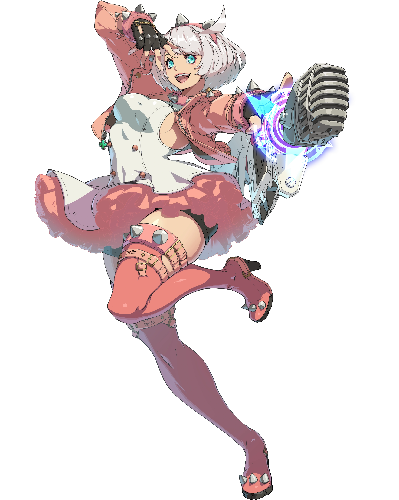
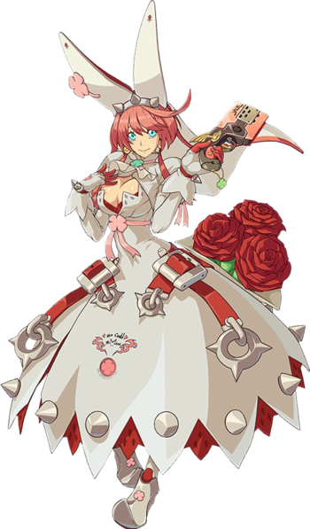

Lore
Elphelt Valentine é uma das personagens jogáveis de Guilty Gear -Strive-,
Guilty Gear Xrd, e uma Valentine criada pela Vontade Universal de Guilty Gear
assim como Ramlethal Valentine, sua irmã mais velha, e Jack-O' Valentine (idade desconhecida).
Ela é EXTREMAMENTE animada para encontrar um marido, com os diálogos de seus Arcades
geralmente acabando com um homem correndo atrás dela para não ter que explicar
por que carambolas se casou com uma mulher que nem conhece direito
(Isto antes de entrar para o reino de Ilíria).
Mas, inicialmente, a Elphelt não era conhecida por sua personalidade. Como uma das Valentines,
a principal ordem dada pela Vontade Universal era de destruir o mundo humano
(Essa "Vontade" foi inicialmente feita para encontrar um jeito de deixar os humanos eternamente felizes,
mas ela decidiu que os humanos nem deveriam existir. Clichêzinho frequente de toda série).
Entretanto, não pense que ela sai por aí metendo facada em tudo que encontrar, porque
nesse tempo ela foi programada no subconsciente pela sua "Mãe" para Observar "Sol Badguy"
(por motivos de excesso de qualidade, o protagonista do jogo não é a Elphelt) até que a
"Justice" fosse revivida (Justice é uma criação "Daquele Cara", outro personagem muito importante).
Só que havia um pequeno problema: Elphelt recebeu emoções. E isso é meio
importante quando seu trabalho envolve obedecer cegamente a uma entidade que quer acabar com a humanidade.
Diferentemente da Valentine original, que era praticamente uma máquina ambulante de "Mamãe mandou, então eu faço",
Elphelt desenvolveu personalidade própria, desejos e, principalmente,
uma quantidade duvidosa de entusiasmo por romance.
Sua programação acabou despertando justamente no dia de seu casamento.
Ela havia sido colocada no caminho de um cantor de death metal como parte do plano da Universal Will,
mas, durante o casamento, sua verdadeira natureza começou a despertar.
Elphelt percebeu que não queria simplesmente seguir as ordens da "Mãe"
e acabou rompendo com o papel que havia sido preparado para ela.
Seu noivo, compreensivelmente, também não teve uma reação muito favorável
ao descobrir que a futura esposa vinha com uma programação secreta de assassinato embutida. :(
Resumindo o resto:
Em determinado momento, Elphelt chegou a tentar se sacrificar para impedir
que fosse usada no plano da Universal Will, mas Ramlethal conseguiu salvá-la.
Depois que a ameaça foi resolvida, Elphelt finalmente ganhou liberdade
para decidir seu próprio caminho. Em Guilty Gear -Strive-, ela
tenta descobrir como pode fazer as pessoas felizes e eventualmente decide
formar uma banda, a Speothos Venaticus, tornando-se vocalista.
Portanto, Elphelt passou de arma criada para ajudar a destruir a humanidade para... Uma cantora muito fodaASKOAXMSMDMIUAONDJASDIODMJS!!!!1
Jogabilidade
Elphelt é uma personagem extremamente ofensiva de Guilty Gear -Strive-, especializada em pressionar
o adversário sem dar muito tempo para respirar. Sua jogabilidade mistura ataques
de curta distância com armas de fogo, permitindo que ela seja perigosa em diferentes distâncias.
Seu principal destaque são as sequências de Rekka, que oferecem diferentes continuações
durante a pressão. Isso obriga o adversário a tentar adivinhar o que ela fará em seguida,
enquanto Elphelt pode continuar atacando, mudar sua opção ou simplesmente esperar uma reação.
Basicamente, ela transforma a defesa do adversário em uma prova de múltipla escolha e, infelizmente,
não entrega o gabarito. Suas armas também ajudam a controlar o espaço e manter o oponente constantemente ameaçado.
Quando consegue uma abertura, Elphelt pode transformar uma pequena vantagem em uma sequência bastante perigosa.
Por isso, jogar bem com ela exige saber quando continuar pressionando e quando mudar o ritmo.
Apesar de toda a aparência caótica, suas melhores decisões dependem bastante de posicionamento
e leitura.

